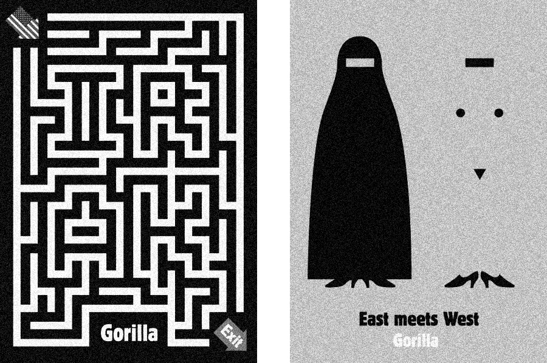
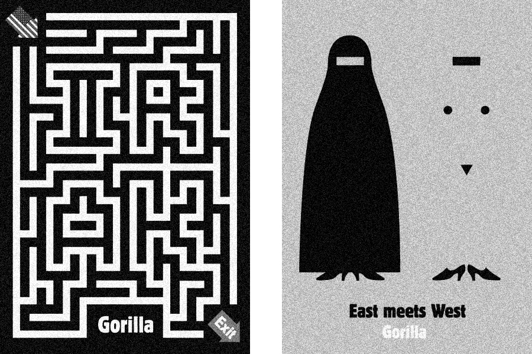
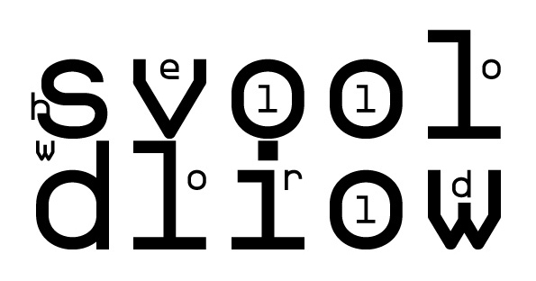

INLEIDING
Vanuit de kunstacademie wordt maatschappelijke betrokkenheid erg gestimuleerd. Deze benadering van het ontwerpersvak sluit aan bij de huidige tijdsgeest. Het onderzoek waarmee het onderwerp verkend wordt levert vaak nieuwe inzichten op. Maar welke positie je als ontwerper moet innemen in een debat is dan nog lang niet vanzelfsprekend. Want hoe moet je je als ontwerper mengen in maatschappelijke problemen zonder ongeloofwaardig, té belerend of té nonchalant over te komen? Behalve dat je als ontwerper deze valkuilen moet zien te vermijden, blijft de vraag bestaan op welke manier de ontwerper dan wél van waarde kan zijn voor maatschappelijke problemen. Met andere woorden; wat is de waarde van de rol die ontwerpers aannemen wanneer zij zich als maatschappelijk geëngageerd presenteren in zelf geïnitieerde projecten en wat zijn de grenzen daarbij?
Deze vraag zal ik gaan onderzoeken in de komende hoofdstukken. In het eerste deel zal een analyse te lezen zijn van de ontwikkeling van het vak van de grafisch ontwerper en zijn relatie tot maatschappelijk engagement. Vervolgens zullen er 6 projecten van maatschappelijk betrokken ontwerpers en kunstenaars nader worden bestudeerd. Zo probeer ik de grenzen van moeilijk grijpbare zaken als maatschappelijke verantwoordelijkheid en beroepsethiek te verkennen door naar de praktijk te kijken. Uit deze analyses hoop ik elementen te halen die kunnen bijdragen aan kaders waarbinnen de geëngageerde ontwerpers zouden moeten werken om van grootst mogelijke waarde te zijn. In de korte conclusies na elke analyse zullen deze elementen naar voren komen door de ontwerpers met elkaar in debat te laten gaan, projecten met elkaar te vergelijken en algemene lessen te trekken uit individuele voorbeelden. Uiteindelijk vormen deze deelconclusies de bouwstenen voor de slotconclusie.
0
CONTEXT
Grafisch ontwerpers hebben altijd dichtbij de maatschappij gestaan. Dat was vanzelfsprekend want hun taak was vaak om de schakel te zijn in de communicatie tussen opdrachtgever en publiek. Maar ontwerpers hebben zich door de jaren heen niet alleen maar bezig gehouden met communicatie in praktische vorm. Ze hebben zich ook regelmatig maatschappijkritisch opgesteld in hun werk. Dat is zeker niet alleen van de laatste tijd. Schrijver en journalist Julie Lasky maakt hierover een terechte opmerking. Zij zegt in een debat1Arieff, A. Duke, R. Emerson, J. Lasky J. Rich, D Zoels, J. 'Design Matters', Frieze, 20111 over dit onderwerp dat de social design beweging de neiging heeft om haar eigen geschiedenis te vergeten. Lasky raakt hiermee een gevoelige plek want de huidige generatie sociaal geëngageerde ontwerpers presenteert hun werk inderdaad vaak als een contrast met het al bestaande werk. Ontwerpers die sociale verandering willen brengen doen graag voorkomen dat zij de eersten zijn die hiermee komen. Maar grafisch ontwerpers zijn door de hele geschiedenis heen al sociaal betrokken geweest. Ze zijn betrokken geweest bij revoluties, politieke campagnes, protesten en oorlogen. Maar ondanks dat deze relatie er dus altijd al is geweest, is het geen statisch gegeven. De sociale rol van de ontwerper is dus een dynamische rol en kan altijd weer opnieuw gedefinieerd worden.
0.1
0.1 DE GRENZEN VAN HET VAK VERVAGEN
Een verandering die niemand ontgaan kan zijn, is dat de laatste jaren het vak van de grafisch ontwerper is verbreed. Het aantal mogelijkheden dat de grafisch ontwerper binnen handbereik heeft is gegroeid in alle richtingen. Het begint al met de verschillende manieren waarop een ontwerper zich tegenwoordig kan uiten. Een grafisch ontwerper is niet langer gebonden aan klassieke vormen als posters en boeken. Door technologische ontwikkelingen zijn er meer media beschikbaar gekomen en daarnaast heeft de ontwerper grotere vrijheid genomen in het kiezen van een podium voor zijn werk. Maar ook als het gaat om de inhoud zijn er stappen gezet. De ontwerpers zijn niet alleen meer een doorgeefluik. Waar zij eerder tussen boodschap en publiek in stonden als vertalers vervullen zij nu soms ook beide rollen. Dan zijn ze én de zender van de boodschap én degene die de boodschap communiceert. De ontwerper communiceert dan namens zichzelf. En soms, om het nog ingewikkelder te maken, geeft de ontwerper de boodschap van de opdrachtgever zo vorm, dat uit de manier van vormgeven ook nog de stem van de ontwerper zelf doorklinkt. De ontwerper is dan niet alleen meer vormgever maar ook soms redacteur of auteur. Schrijver en designcriticus Max Bruinsma zegt hierover het volgende: 'De ontwerper is effectief medeauteur en mederedacteur van boodschappen geworden, en opereert steeds vaker in intensieve samenwerking met anderen. (...) Ontwerpers worden steeds vaker deel van dergelijke teams van 'vorm-en-inhoud-gevers'. Hun rol als alleen-verantwoordelijken voor de vorm van het eindproduct staat sterk onder druk.'2Bruinsma, M. 'Een ideaal ontwerp is nog niet', De Balie, 19992
Dat de rol van de ontwerper als pure vormgever de laatste jaren naar de achtergrond is geschoven heeft een duidelijke oorzaak. De ontwerper wordt in deze rol bedreigd doordat het gereedschap om te kunnen ontwerpen tegenwoordig beschikbaar is voor een veel groter publiek dan voorheen. Op alle computers zitten nu programma's waar iedereen mee kan werken. De concurrentie is dus aanzienlijk gegroeid. Ontwerper Michael Rock3Arieff, A. Duke, R. Emerson, J. Lasky J. Rich, D Zoels, J. 'Design Matters', Frieze, 20113 gaat zelfs nog verder dan dat. Hij stelt dat er geen verschil meer bestaat tussen professionals en amateurs. Misschien is Rock's analyse iets aan de zwart-witte kant. Er is immers nog altijd vraag naar vormgeving van hoge kwaliteit maar deze is wel afgenomen. Rock erkent dat door het kleiner worden van de functie als vormgever een leegte is achtergebleven, met als gevolg dat ontwerpers op zoek zijn gegaan naar een nieuwe definitie van hun functie om die leegte op te vullen. Zo werden er nieuwe gebieden verkend waarmee vormgeving gecombineerd kon worden en ontwerpers opnieuw van waarde konden zijn.
0.2
0.2 RESEARCH
Een overeenkomst tussen alle sociaal geëngageerde ontwerpers is dat zij zichzelf naast ontwerper ook vaak als researcher omschrijven. Hun projecten beginnen bijna allemaal met een onderzoek. In de gebruikelijke vorm van onderzoek, bijvoorbeeld bij het ontwikkelen van een huisstijl, doet de ontwerper ook onderzoek maar vanuit een andere positie die als doel heeft een zo goed mogelijke communicatie te ontwikkelen voor het bedrijf. De research is er in dat geval op gericht om de ambitie van een opdrachtgever goed te kunnen vormgeven. De vorm van research die bij zelf geïnitieerde projecten wordt toegepast onderscheidt zich doordat het de stem van de ontwerper als onderzoeker een belangrijke plek geeft. Die research is dan vooral gericht op het zoeken naar een oplossing voor een concreet probleem, of met als doel een standpunt in een debat van een goede onderbouwing te voorzien.
In veel gevallen lijkt research dus een essentieel onderdeel te zijn van het vak. Maar omdat het begrip 'research' de laatste jaren erg populair is geworden, wordt het soms ook op een verkeerde manier gebruikt. Door een project als 'a research based project' te bestempelen lijken uitspraken als vanzelfsprekend gelegitimeerd. De vraag in dit stuk is dan ook hoe research daadwerkelijk bij kan dragen aan de kwaliteit van maatschappelijk geëngageerde projecten. Is research een voorwaarde voor het aankaarten van deze onderwerpen of kan het ook zonder? Maar wanneer is research dan goed genoeg om als verantwoording te kunnen functioneren?
De relatie tussen kunst en wetenschap (research) is aan vele veranderingen onderhevig geweest door de geschiedenis heen. Ooit bestond de tegenstelling tussen kunst en wetenschap haast niet. Een voorbeeld van de ultieme vereniging van deze twee is het werk van Leonardo da Vinci, een echte Homo Universalis. Tijdens de Renaissance vonden de wetenschapper en de kunstenaar elkaar dus vaak in één persoon. Na de Verlichting kwam er weer een periode waarin deze twee meer gescheiden van elkaar opereerden. Maar tegenwoordig groeien de kunst en wetenschap weer naar elkaar toe. Daarvan is het groeiende aantal kunst projecten waarbij research aan bod komt een goede illustratie.
Kunst en wetenschap geven allebei een beeld van de wereld weer. Beide maken veel gebruik van het experiment om tot conclusies te komen. Maar het grote verschil zit in de noodzaak van controlemogelijkheden. Bij wetenschap zijn deze onvermijdelijk terwijl ze bij kunst van niet zulk groot belang zijn. Of zoals publicist Willem Elias4Willem Elias (1950) is een Vlaams filosoof, docent en publicist.4 zegt: 'De eerste is bezig met 'de' problemen, de tweede met 'zijn' probleem'.5Elias, W. 'Verschillen en overeenkomsten tussen kunst en wetenschap', 20125 De subjectiviteit van de kunstenaar stelt hem vrij van deze controlemogelijkheden. Aan de ene kant geeft dit kunstenaar meer vrijheid in het doen van onderzoek en zorgt dit voor meer verrassingen en nieuwe inzichten. Maar tegelijkertijd moeten de conclusies van de kunstenaar dus anders worden gewogen dan die van de wetenschapper.
Ondanks dit gebrek voegen kunstenaars op hun eigen manier genoeg toe om volwaardige deelnemers te zijn in maatschappelijke debatten. Professor in Art & Research Janneke Wesseling6Janneke Wesseling is directeur van PhDArts aan de Academie der Kunsten van de Universiteit Leiden en hoogleraar Kunst en Onderzoek aan de Universiteit van de Kunsten, Den Haag.6 vindt het van groot belang dat de stem van kunstenaars en ontwerpers gehoord wordt op het niveau van de wetenschap. Ze stelt vast dat we gewend zijn geraakt aan een cliché beeld dat wetenschap alleen maar gaat over onomstotelijke waarheden en dat alleen de wetenschappers het recht hebben om de juiste vragen te stellen. Precies daarom is het belangrijk dat er ook andere mensen heel actief zijn in het stellen van de juiste vragen, ook als er niet een kant-en-klaar feitelijk antwoord op is. Het stellen van de vraag kan net zo belangrijk zijn als het beantwoorden daarvan. Wesseling pleit er voor dat ontwerpers de wetenschap blijven prikkelen met onverwachte vragen.
Wesseling zegt vervolgens dat de ontwerper niet op de stoel van de wetenschapper moet willen zitten. 'Je moet niet willen concurreren met echte wetenschappers want dan ga je altijd verliezen'.7Interview Janneke Wesseling, Amsterdam, 23 november 20167 Maar wat de ontwerper vooral wél moet doen is zijn eigen positie uitbuiten. De ontwerper is namelijk in staat om denken hand in hand te laten gaan met maken. In de inleiding van de door haar samengestelde bundel See It Again, Say It Again8 schrijft zij hierover het volgende: 'The work of art is the materialization of thinking; thinking is rendered visible in the work of art.'9Wesseling, J (2011), See it Again, Say it Again: The Artist as Researcher, Valiz p. 11-129 Dit onderscheidt de manier waarop kunstenaars onderzoek doen drastisch van de manier waarop theoretisch geschoolden dat doen.
8Wesseling, J (2011), See it Again, Say it Again: The Artist as Researcher, ValizAansluitend bij het fenomeen van de vervagende grenzen en de kennelijke leegte die is ontstaan binnen het vak van de ontwerper, is het doen van research daarmee ook een manier geworden om het werk relevanter te maken. Met research kunnen ontwerpers bepaalde keuzes beter verantwoorden. Onderbouwing van een standpunt is al helemaal van belang bij maatschappelijke onderwerpen.
0.3
0.3 MOOI IS NIET GENOEG
Weinig ontwerpers noemen zich tegenwoordig nog graag vormgevers. Ontwerpers die zichzelf serieus nemen noemen zich liever grafisch ontwerper, designer, graphic artist of nog beter graphic artist and researcher. Alles behalve vormgever. Want dat doet vermoeden dat zij niets anders doen dan iets vormloos van een vorm voorzien. Veel ontwerpers herkennen zich tegenwoordig niet meer in deze omschrijving. Zij zien zichzelf als ontwerpers met doelen die meer dienen dan alleen esthetiek en communicatie. Of zoals Michael Rock zegt: 'Form-follows-function has become form-follows-content. This makes form without content an empty shell'.10Rock, M. 'Fuck Content', 200910 De angst voor het creëren van een 'empty shell' is iets dat veel ontwerpers tegenwoordig ervaren.
De veronderstelling bestaat dat een ontwerper die zich presenteert als maatschappelijk geëngageerd, werk van een andere orde maakt dan een pure vormgever en daarom ook 'beter' is. Maar waarom is dat het geval? Waarom moet een werk altijd maatschappelijk geëngageerd zijn voordat het van belang kan zijn? Zijn het niet twee verschillende benaderingen die naast elkaar kunnen bestaan?
Wat in ieder geval opvalt, is dat ontwerpers die zich niet direct bezighouden met sociaal engagement zich daarbij minder op hun gemak lijken te voelen dan voorheen, omdat de groep ontwerpers die dat wel doet groeiende is en meer op de voorgrond treedt. Niet alleen binnen design is er meer aandacht voor ethische kwesties maar in de maatschappij in het algemeen is er een groeiend ethisch besef.11Leonard, N Ambrose, G (2012), Design Research, Ava Publishing, p. 4611 Sommige ontwerpers hebben hierdoor het gevoel gekregen dat zij zich ook aan moeten sluiten bij deze sociale beweging. Een gevaar dat hierin schuilt is dat er door deze druk te snel gegrepen wordt naar grote onderwerpen en grote uitspraken zonder dat daar een goede basis voor is. Hiermee wordt dus aan het eigenlijke doel van sociaal engagement voorbij gegaan. Het wordt soms meer een trucje dan echte betrokkenheid, terwijl dit lijnrecht ingaat tegen het principe waar het allemaal mee begon: projecten maken met inhoud en ambitie. Door te haastig om te gaan met deze onderwerpen en daardoor geen recht te doen aan de kwestie, wekt het alleen maar de schijn van inhoud. De werkelijke 'empty shell' dus.
Het ongemak dat komt kijken bij het staan achter een puur visueel werk is ook opvallend bij ontwerper en kunstenaar Sigrid Calon12Sigrid Calon is een Nederlandse kunstenares werkend in Tilburg.12. Zij maakte een collectie prints die een visueel onderzoek vormen naar mogelijke composities geïnspireerd op de structuur van borduurwerk. Ze heeft binnen de beperkingen van het grid alle mogelijkheden afgetast. Dit zorgt ervoor dat je kunt blijven kijken. Want ook al zijn er bepaalde regels, toch zijn alle composities anders en steeds verrassend. Los van de verschillen in compositie is het kleurgebruik en de druktechniek visueel ook heel aantrekkelijk. Haar werk is dus prachtig, maar dat is het dan ook. Het heeft geen conceptuele laag of een andere verassende wending. Het is alleen maar heel mooi. Dat lijkt in eerste instantie iets om trots op te zijn maar toch voelt Sigrid Calon zich hier niet helemaal comfortabel bij. In interviews over haar werk zegt ze nooit gewoon: mijn werk is een visueel onderzoek naar de mooiste composities mogelijk met deze set van vormen. Integendeel, ze praat over haar werk alsof het een hoger doel dient dan alleen esthetiek. Ze zegt bijvoorbeeld in één van de gesprekken dat haar werk ook een nieuwe manier van communiceren kan zijn.13Geen auteur, ‘We Like Art @ Art Rotterdam - Interview met Sigrid Calon’, www.welikeart.nl, gezien april 201613 Ze lijkt de druk te voelen om het werk te verantwoorden maar in haar geval doen deze verantwoordingen enigszins geforceerd aan. Toch is het opmerkelijk te noemen dat ze zich in deze bochten wil wringen want voor haar succes lijkt het helemaal niet uit te maken dat het alleen om esthetiek draait. Het grootste deel van haar publiek is niet op zoek naar een tweede laag of een verantwoording voor bepaalde keuzes. Zij houden van haar werk omdat het mooi is. Deze druk komt dus niet vanuit haar publiek.
Omdat de nadruk steeds meer ligt op de inhoudelijke doelen krijgt de vorm soms niet genoeg aandacht. Michael Rock beschrijft dat het lijkt alsof we geaccepteerd hebben dat het ontwikkelen van de inhoud belangrijker is dan deze te vormen. Met als gevolg dat de inhoud de kwaliteit van het ontwerp bepaalt en vorm daarin minder bepalend is. De extra aandacht die inhoud krijgt kan ten koste gaan van de vorm en er dreigt, als de lijn doorgetrokken wordt, onderwaardering en verwaarlozing.
0.4
0.4 ENGAGEMENT EN VERANTWOORDELIJKHEID
Design moet tegenwoordig 'iets doen'. Het is niet voor niks dat er de laatste jaren steeds meer conferenties, wedstrijden en tentoonstellingen bij komen met het uitgangspunt kunstenaars te laten dragen aan oplossingen voor maatschappelijke problemen. Het meest concrete voorbeeld hiervan is de jaarlijkse 'What Design Can Do' conferentie is Amsterdam14What Design Can Do begon in 2011 als een platform voor design dat de maatschappelijke vragen van onze tijd behandelt. Daar maakt de jaarlijkse conferentie in Amsterdam deel van uit.14. Hier wordt de impact van alle vormen van design besproken. Maar de nadruk ligt overduidelijk op sociale en maatschappelijke impact. De vervaagde grenzen van het vak, het toegenomen gebruik van research en het idee dat mooi niet goed genoeg is, hebben bijgedragen aan de manier waarop sociaal geëngageerde ontwerpers zich tegenwoordig manifesteren.
Eén van de tentoonstellingen die binnen dit thema past is de expositie 'Dream out Loud'15Dream Out Loud! Designing For Tomorrow's Demands, Stedelijk Museum Amsterdam, 26 Augustus 2016 - 1 Januari 201715 in het Stedelijk Museum. Daar worden 26 projecten van jonge ontwerpers tentoongesteld die stuk voor stuk een visie op de toekomst geven. De meeste projecten behandelen een maatschappelijk probleem. En zoals de titel al zegt; het zijn voornamelijk projecten met grootse plannen maar ook met weinig realisme. De vraag is of dat realisme nodig is voor kunstenaars of dat ze vrijgesteld zijn van praktische hindernissen. Vraagt een serieus maatschappelijk probleem niet om meer acute en concrete bijdrages dan utopische toekomst visies die niet te realiseren zijn? Ook op de manier van presenteren is er kritiek. Auteur en ontwerper Noortje van Eekelen schrijft in haar recensie16Van Eekelen, N. 'Gaat een vaas de wereld redden? Social Design in het Stedelijk', Metropolis M, 201616 van deze tentoonstelling dat de relatie die de projecten hebben met de maatschappelijke problemen van nu slechts op de achtergrond aanwezig is. Ze constateert dat de tentoonstelling vooral bestaat uit vazen, stoelen en andere producten en stelt kritische vragen bij de werkelijke relevantie van deze objecten voor de maatschappelijke problemen. Ook zij benoemt de goede bedoelingen maar pleit vervolgens wel voor meer kritische reflectie.
Ook Hella Jongerius17Hella Jongerius (1963) is een Nederlands industrieel ontwerpster. Ze is opgeleid aan de Design Academy in Eindhoven.17 houdt zich bezig met het doel dat design dient. Zij heeft hier ook het enige in zien veranderen. In haar manifest 'Beyond the new'18 beschrijft ze hoe ontwerpers zich in deze tijd volgens haar zouden moeten opstellen. Ze beschrijft hoe 'Dutch Design' is veranderd van innovatief en experimenteel op het gebied van functie en esthetiek in een zoektocht naar nieuwe idealen op sociaal gebied, het zogenaamde Social Design. Jongerius stelt dat deze generatie vooral op zoek is naar 'iets nieuws' per sé. Zij bestempelt deze benadering niet als echte innovatie maar als projecten die alleen de illusie van nieuw uitstralen. In deze hoek van design is dus misschien wel sprake van een gebrek aan kritische reflectie, vooral wanneer ontwerpers met hun Social Design een moreel appèl doen aan hun publiek.
Zoals in het eerste deel beschreven hebben grafisch ontwerpers door een aantal ontwikkelingen meer mogelijkheden gekregen en kan hun rol in de maatschappij dus ook verschillende vormen aannemen. Het is een waardevolle ontwikkeling dat de designwereld haar visie geeft op de wereld om ons heen. 18Jongerius, H. en Schouwenberg L. 'Beyond the New: A Search for Ideals in Design', 2015Maar er zit ook een keerzijde aan. Het deelnemen aan politieke en sociale debatten in het openbaar brengt ook nieuwe verantwoordelijkheden met zich mee die om extra aandacht vragen. Een aantal uitspraken over de negatieve bijwerkingen hiervan is al gedaan. Zo zei Julie Lasky dat ontwerpers ondanks goede bedoelingen soms projecten starten die sociale problemen uiteindelijk niet helpen oplossen of in sommigen gevallen zelfs erger maken. Dit heeft te maken met het feit dat complexe maatschappelijke problemen vaak veel tijd, aandacht en geduld vragen. Iets wat ontwerpers vaak onderschatten of waarvoor ze niet zijn opgeleid19Arieff, A. Duke, R. Emerson, J. Lasky J. Rich, D Zoels, J. 'Design Matters', Frieze, 201119. Grafisch ontwerp Tibor Kalman zei: 'Well, I think the word 'cool' has replaced the word 'content'. If you have enough attitude in your work, if it's cool enough, then it doesn't matter that there's no content'.20 Deze voorbeelden van de negatieve effecten geven aan dat alleen een goede bedoeling hebben niet goed genoeg is.
Zoals Ruben Pater in zijn boek 'The Politics of Design'21 al beschrijft zijn alle ontwerpkeuzes die gemaakt worden niet los te zien van sociale en politieke contexten, en daarom per definitie politieke keuzes zijn. Elke ontwerper draagt dus al in zekere mate een verantwoordelijkheid tegenover de maatschappij. Maar de kritische reflectie is in het bijzonder nodig bij projecten die zich mengen in maatschappelijke debatten of iets willen bijdragen aan maatschappelijke problemen. Dit zijn vaak gevoelige onderwerpen waarbij de impact die de ontwerper kan hebben consequenties heeft van een andere orde dan wanneer de ontwerper een flyer maakt voor de plaatselijke groenteboer. Om te kunnen bijdragen aan de maatschappij moet de 20Kalman, T. 'On Social Responsibility'ontwerper precies weten waar en hoe hij van waarde kan zijn. En daarvoor moeten de kaders en grenzen opnieuw worden verkend. Alleen dan kunnen ontwerpers hun positie optimaal benutten en van waarde zijn in maatschappelijke kwesties.21Pater, R (2016), The Politics of Design, BIS Publishers
1
CASE 1
Martijn Engelbregt:
BETER
Martijn Engelbregt22Martijn Engelbregt (1972) is een Nederlands conceptueel kunstenaar en grafisch ontwerper. Hij studeerde aan het Sandberg Instituut in Amsterdam.22 heeft al veel maatschappelijke thema’s aangekaart. Een thema dat vaker terugkomt in zijn werk is de zorg. Het project BETER valt ook binnen dit thema. Voor Engelbregt begon BETER met de analyse van een gebrek in de huidige gezondheidszorg. Volgens hem is het geen goede ontwikkeling dat de gezondheidszorg steeds meer langs een meetlat wordt gelegd. Hij vindt het kwalijk dat er minder tijd en geld is voor persoonlijke aandacht en de kwaliteit van de omgeving. Want aangetoond is dat aandacht voor de helende werking van omgevingsfactoren een positief effect heeft op de gezondheid van patiënten.
Engelbregt wijst er niet alleen op dat dit een gemiste kans is voor patiënten om sneller te genezen, maar ook een gemiste kans op besparing op kosten van de zorg. Met dit in zijn achterhoofd stelt Engelbregt de vraag of kunst op deze manier ook een positief effect op de gezondheid kan hebben. Zelf zegt hij hierover het volgende: ‘Voor het stilstaan bij de betekenis van het ongemak van ziekte enerzijds, en het waarderen van gezondheid anderzijds, is in het ziekenhuis nog geen dienst of afdeling. Met BETER hebben we denk ik een aanzet gegeven voor zo’n beweging binnen de gezondheidszorg. Ik geloof dat er ontspanning nodig is als het om gezondheid gaat, en ik geloof dat kunst kan bijdragen aan die ontspanning.’23 Met BETER wil hij niet alleen deze vraag onderzoeken maar wil hij ook zijn 23Engelbregt, M. (2013), Om in te nemen, Amsterdam: Circus Engelbregt p. 4publiek aanmoedigen om na te denken over hoe omgevingsfactoren bij kunnen dragen aan hun eigen gezondheid.
 24Engelbregt, M. (2013), Om in te nemen, Amsterdam: Circus EngelbregtHij behandelt deze vraag door meerdere experimenten uit te voeren in het ziekenhuis. Eén daarvan is een experiment waarbij hij patiënten naar kunstwerken laat kijken, sommige werken zijn echte kunst en sommige noemt Engelbregt placebo kunst. De patiënten zitten vast aan apparatuur die de verschillende reacties van het lichaam op de kunstwerken bijhoudt. Op basis van deze uitslagen en door de patiënten ingevulde vragenlijsten zou moeten blijken of echte kunst daadwerkelijk een helende werking heeft. Uiteindelijk beschrijft hij in de conclusie van het boek24 dat over dit project is verschenen dat het moeilijk is om deze vraag te beantwoorden omdat de begrippen kunst en gezondheid te moeilijk te definiëren en te relatief zijn om te kunnen meten.
De wetenschappelijke registraties zijn voor het trekken van een conclusie verwaarloosbaar. De experimenten krijgen daarom meer de vorm van een parodie. Een parodie waar Engelbregt eerder kritiek op had: de zorg wordt te veel langs een meetlat gelegd. BETER levert daar kritiek op door onmeetbare factoren te meten. Het is dan ook opmerkelijk dat Engelbregt dit in geen enkel interview benoemt. Sterker nog, hij praat redelijk serieus over het nut van de experimenten en de uitslagen daarvan. Daarmee spreekt hij zijn eigen stelling juist weer tegen.
Maar ook al speelt de zoektocht naar het antwoord op deze vraag een grote rol, toch is dit niet het meest belangrijke aspect van het project. Dat is namelijk de manier waarop dit project de benadering van onze gezondheid in de huidige maatschappij bevraagt. Aan de ene kant heeft BETER een wetenschappelijke benadering maar tegelijkertijd relativeert het zichzelf weer door de nodige hoeveelheid humor. Want een echt antwoord op deze vraag krijgen door middel van wetenschappelijke experimenten bleek bij voorbaat al onhaalbaar.
Het project is met interesse ontvangen in de culturele wereld maar de belangrijkste drijfveer van Engelbregt was om iets positiefs bij te dragen aan de zorgsector. 25Engaged Art Fair, 2/3/4 december, De Balie AmsterdamWat heeft die sector dan van dit project opgestoken? Op een debatavond in Amsterdam25 kreeg huisarts Dirk Achterberg de gelegenheid om te reageren op het project van Engelbregt. Zijn eerste reactie was: ‘Het werkt niet maar het helpt wel’. Waarmee hij bedoelde dat het project niet concreet bijdraagt aan de genezing van patiënten maar dat het wel kan bijdragen aan de manier waarop de patiënt zijn ziekte beleeft. Ondanks deze opmerking zegt Achterberg dat het van groot belang is dat kunstenaars zich bezighouden met dit soort onderwerpen. Hij vindt het noodzakelijk dat er af en toe ook vanuit onverwachte hoek kritisch wordt gekeken naar hoe systemen werken. De zorgsector werkt op de automatische piloot en laat weinig ruimte voor reflectie. Daarom is het goed dat buitenstaanders daar vragen over stellen. Zo hebben beide partijen baat gehad bij dit project.
24Engelbregt, M. (2013), Om in te nemen, Amsterdam: Circus EngelbregtHij behandelt deze vraag door meerdere experimenten uit te voeren in het ziekenhuis. Eén daarvan is een experiment waarbij hij patiënten naar kunstwerken laat kijken, sommige werken zijn echte kunst en sommige noemt Engelbregt placebo kunst. De patiënten zitten vast aan apparatuur die de verschillende reacties van het lichaam op de kunstwerken bijhoudt. Op basis van deze uitslagen en door de patiënten ingevulde vragenlijsten zou moeten blijken of echte kunst daadwerkelijk een helende werking heeft. Uiteindelijk beschrijft hij in de conclusie van het boek24 dat over dit project is verschenen dat het moeilijk is om deze vraag te beantwoorden omdat de begrippen kunst en gezondheid te moeilijk te definiëren en te relatief zijn om te kunnen meten.
De wetenschappelijke registraties zijn voor het trekken van een conclusie verwaarloosbaar. De experimenten krijgen daarom meer de vorm van een parodie. Een parodie waar Engelbregt eerder kritiek op had: de zorg wordt te veel langs een meetlat gelegd. BETER levert daar kritiek op door onmeetbare factoren te meten. Het is dan ook opmerkelijk dat Engelbregt dit in geen enkel interview benoemt. Sterker nog, hij praat redelijk serieus over het nut van de experimenten en de uitslagen daarvan. Daarmee spreekt hij zijn eigen stelling juist weer tegen.
Maar ook al speelt de zoektocht naar het antwoord op deze vraag een grote rol, toch is dit niet het meest belangrijke aspect van het project. Dat is namelijk de manier waarop dit project de benadering van onze gezondheid in de huidige maatschappij bevraagt. Aan de ene kant heeft BETER een wetenschappelijke benadering maar tegelijkertijd relativeert het zichzelf weer door de nodige hoeveelheid humor. Want een echt antwoord op deze vraag krijgen door middel van wetenschappelijke experimenten bleek bij voorbaat al onhaalbaar.
Het project is met interesse ontvangen in de culturele wereld maar de belangrijkste drijfveer van Engelbregt was om iets positiefs bij te dragen aan de zorgsector. 25Engaged Art Fair, 2/3/4 december, De Balie AmsterdamWat heeft die sector dan van dit project opgestoken? Op een debatavond in Amsterdam25 kreeg huisarts Dirk Achterberg de gelegenheid om te reageren op het project van Engelbregt. Zijn eerste reactie was: ‘Het werkt niet maar het helpt wel’. Waarmee hij bedoelde dat het project niet concreet bijdraagt aan de genezing van patiënten maar dat het wel kan bijdragen aan de manier waarop de patiënt zijn ziekte beleeft. Ondanks deze opmerking zegt Achterberg dat het van groot belang is dat kunstenaars zich bezighouden met dit soort onderwerpen. Hij vindt het noodzakelijk dat er af en toe ook vanuit onverwachte hoek kritisch wordt gekeken naar hoe systemen werken. De zorgsector werkt op de automatische piloot en laat weinig ruimte voor reflectie. Daarom is het goed dat buitenstaanders daar vragen over stellen. Zo hebben beide partijen baat gehad bij dit project.
1
Engelbregt toont aan met zijn project dat het stellen van een relevante vraag van groot belang kan zijn. Ook als buitenstaander, die de ontwerper vaak is. En in dit geval júist als buitenstaander. Door het stellen van een vraag uit onverwachte hoek kunnen vastgeroeste sectoren wakker geschud worden, iets wat van binnenuit de sector minder voor hand ligt. In het hoofdstuk ‘research’ laat Janneke Wesseling zich daar ook al positief over uit. Zij ziet het als een belangrijke taak van de creatieve sector om andere sectoren te prikkelen door het stellen van onverwachte vragen. Een antwoord geven op die vragen is niet altijd noodzakelijk voor de ontwerper.26Interview Janneke Wesseling, Amsterdam, 23 november 201626
Wat Engelbregt tegelijkertijd laat zien is de zwakte van de ontwerper wanneer hij op zoek gaat naar wetenschappelijke bewijzen, ondanks dat hij in het midden laat of de experimenten bedoeld zijn om conclusies uit te trekken of alleen om het belang van zijn vraag te benadrukken. Uiteindelijk blijkt de vraag in ieder geval veel belangrijker voor de zorgsector te zijn geweest dan de pogingen om die te beantwoorden. Wesseling benadrukte daarom ook eerder dat de ontwerper niet moet willen concurreren met de wetenschapper, want dit maakt hem alleen maar ongeloofwaardig. Engelbregt laat te veel in het midden of hij echt wetenschap bedrijft, of er alleen maar mee speelt. Als hij op dit gebied een duidelijkere keuze had gemaakt, had zijn rol in het probleem waarschijnlijk van nog meer waarde kunnen zijn.
1.1
Door vanuit een ander perspectief een vraag te stellen kan een ontwerper vastgeroeste sectoren een spiegel voorhouden en opnieuw aan het denken zetten.
1.2
Een ontwerper verzwakt zijn positie wanneer hij op de stoel van de wetenschapper gaat zitten.
2
CASE 2
Alex Clay:
Gorilla
27De Designpolitie (Richard van der Laken en Pepijn Zurburg), Lesley Moore (Alex Clay en Karin van den Brandt) en Herman van Bostelen.Gorilla is al sinds 2006 een begrip als het gaat om visueel commentaar op de wereld om ons heen. De maker van deze column is een collectief van grafisch ontwerpers27 dat eerst in de Volkskrant publiceerde en later in de Groene Amsterdammer. Door de jaren heen hebben de ontwerpers hun eigen beeldtaal ontwikkeld. Deze bestaat uit het gebruik van bestaande symbolen, pictogrammen, vlaggen en andere herkenbare vormen. De beelden die hieruit voortkomen stellen een vraag of plaatsen een commentaar bij het nieuws van de dag. Altijd op een speelse en intelligente manier.
Het collectief was al langer op zoek naar een manier om deel te nemen aan 28Alex Clay (1974) is een Noorse grafisch ontwerper en mede-eigenaar van de Amsterdamse studio Lesley Moore. Hij studeerde aan de ArtEZ in Arnhem.maatschappelijke debatten. Deze verantwoordelijkheid wilden ze graag omarmen en vonden daar de Gorilla voor als geschikte vorm. Eén van hen is ontwerper Alex Clay28. Hij is een interessante ontwerper want naast de Gorilla maakt hij over het algemeen werk in opdracht van de culturele sector. Hij spreekt in zijn andere werk dus nooit namens zichzelf maar altijd namens zijn opdrachtgever. Clay is dus bekend met de verschillende posities die de ontwerper in kan nemen in de maatschappij.
Clay herkent het gevoel dat je er als ontwerper soms meer toe wil doen in de samenleving. Meer dan alleen op communicatief niveau. In zijn ogen is de rol van de ontwerper niet alleen zinvol wanneer hij zich mengt in maatschappelijke debatten met zelf geïnitieerde projecten. Als ontwerper kun je immers ook anderen met een goed verhaal ondersteunen door hun boodschap zo goed mogelijk over te brengen. Door een sterk verhaal optimale impact te laten veroorzaken ben je als ontwerper soms meer zinvol bezig dan wanneer je een eigen verhaal wil creëren. Op die manier wordt er optimaal gebruik gemaakt van ieders kwaliteiten.
In de vorm van de Gorilla is het de ontwerpers gelukt om op een zinvolle manier deel te nemen aan het politieke en sociale debat en daarin namens zichzelf te spreken. Dat is een verantwoordelijke rol want de column bereikt een groot publiek. Verschuilen achter een opdrachtgever kan niet meer. Maar bij Alex Clay duikt bij die verantwoordelijkheid ook een probleem op. Hij gaf toe soms ook een dag ‘geen mening’ te hebben. En dan toch moest er een commentaar gemaakt worden. Daar heeft hij zich niet altijd even gemakkelijk bij gevoeld. Het is onrealistisch te verwachten dat ontwerpers over elk nieuwsfeit iets kunnen zeggen. Kun je niet alleen maar over onderwerpen waar je al veel van weet iets zeggen?
 Je zou zeggen dat columnisten die zich bezig houden met het nieuws ook elke dag met hun neus in de krant zitten, maar dat is niet het geval bij het Gorilla collectief. Natuurlijk is er een bovengemiddelde interesse in wat er gaande is in de wereld, maar ze weten zeker niet van alle onderwerpen iets af. Hoe kun je dan toch iets zinnigs zeggen op een groot podium ondanks dat je niet alle kennis tot je beschikking hebt. Gorilla heeft daarvoor als oplossing gevonden dat ze proberen te vermijden het nieuws letterlijk weer te geven. Ze kiezen ervoor om een reflectie op het nieuws te geven. Dit doen ze door uit te zoomen en iets te zeggen over bijvoorbeeld de tijdgeest. Zo raken ze niet verstrikt in feitelijke nieuwskwesties en zijn ze gewone burgers – geen journalisten – die hun kijk op de wereld geven. In die rol zien zij de grootste kans voor de ontwerper om van waarde te kunnen zijn in het debat. Soms werkt een zekere afstand tot een onderwerp dus positief.

Het maken van een column voor een groot publiek zorgt ervoor dat de makers veel invloed hebben op de publieke opinie. Die invloed moet met aandacht vormgegeven worden. Als hier slordig mee om wordt gegaan kan dat negatieve gevolgen hebben op korte of lange termijn. Maar Clay stelt vast dat de Gorilla’s deze invloed niet gebruiken om een mening aan het publiek op te dringen. De Gorilla probeert een deel van het verhaal te vertellen maar ook een deel open te laten zodat de kijker zelf een mening kan vormen. Hierdoor proberen ze hun eigen stem niet te overheersend te laten zijn. Ze laten het publiek de wereld zien volgens Gorilla.
Je zou zeggen dat columnisten die zich bezig houden met het nieuws ook elke dag met hun neus in de krant zitten, maar dat is niet het geval bij het Gorilla collectief. Natuurlijk is er een bovengemiddelde interesse in wat er gaande is in de wereld, maar ze weten zeker niet van alle onderwerpen iets af. Hoe kun je dan toch iets zinnigs zeggen op een groot podium ondanks dat je niet alle kennis tot je beschikking hebt. Gorilla heeft daarvoor als oplossing gevonden dat ze proberen te vermijden het nieuws letterlijk weer te geven. Ze kiezen ervoor om een reflectie op het nieuws te geven. Dit doen ze door uit te zoomen en iets te zeggen over bijvoorbeeld de tijdgeest. Zo raken ze niet verstrikt in feitelijke nieuwskwesties en zijn ze gewone burgers – geen journalisten – die hun kijk op de wereld geven. In die rol zien zij de grootste kans voor de ontwerper om van waarde te kunnen zijn in het debat. Soms werkt een zekere afstand tot een onderwerp dus positief.

Het maken van een column voor een groot publiek zorgt ervoor dat de makers veel invloed hebben op de publieke opinie. Die invloed moet met aandacht vormgegeven worden. Als hier slordig mee om wordt gegaan kan dat negatieve gevolgen hebben op korte of lange termijn. Maar Clay stelt vast dat de Gorilla’s deze invloed niet gebruiken om een mening aan het publiek op te dringen. De Gorilla probeert een deel van het verhaal te vertellen maar ook een deel open te laten zodat de kijker zelf een mening kan vormen. Hierdoor proberen ze hun eigen stem niet te overheersend te laten zijn. Ze laten het publiek de wereld zien volgens Gorilla.
2
29Ruben Pater is een ontwerper die vanuit Amsterdam onder de naam Untold Stories werkt. Hij behaalde zijn master grafisch ontwerpen aan het Sanberg Instituut.In zijn werk bewijst Clay dat de grafisch ontwerper de kwaliteiten heeft om zijn publiek door andere ogen te laten kijken. Dat doet hij door met gepaste afstand te reflecteren op de wereld en hij speelt daardoor geen overheersende rol. De kijker krijgt genoeg ruimte om zelf een mening te vormen. Hij stelt dat de ontwerper zou moeten vermijden om verstrikt te raken in feitelijke kwesties en zou in plaats daarvan moeten uitzoomen op het onderwerp om een visie te kunnen geven. Ook Ruben Pater29 zegt dat ontwerpers zich best kunnen uitlaten over onderwerpen zonder erin gespecialiseerd te zijn maar het mag niet als de waarheid verkocht worden. De ontwerper moet volgens Pater altijd duidelijk maken dat hij namens zichzelf spreekt en vervolgens zijn publiek zelf haar mening te laten vormen. De ontwerper zou een open en bescheiden houding moeten aannemen.30Interview Ruben Pater, Den Haag, 29 november 201630
Clay stelt dat het ook nadelig kan zijn als de ontwerper zich de rol van opiniemaker toe-eigent. De valkuil kan zijn dat hij het gevoel heeft overal een mening over te moeten hebben en dat het een trucje wordt. Terwijl de ontwerper eigenlijk wel een band met het onderwerp zou moeten hebben voordat hij zich erover uit kan spreken.
Maar wat Clay ook laat zien met het maken van de Gorilla’s is dat deze valkuil goed te omzeilen is. De ontwerper kan zich wel over elk onderwerp uitspreken maar niet in de rol van journalist. Hiermee bewijst hij dus het tegendeel van wat vormgevers zoals Wim Crouwel31 vinden die menen dat ontwerpers zich buiten dit soort debatten zouden moeten houden. Crouwel zei hierover: ‘Mensen, stel je vooral goed voor ogen waar je mee bezig bent. En als je dat niet kunt rijmen met wat31Wim Crouwel is een Nederlandse grafisch ontwerper. Hij is oa oprichter van Total Design, was ontwerper voor het Stedelijk Museum en ontwierp the New Alphabet. je aan het doen bent, stap er dan uit en ga liever politicologie studeren of filosofie of psychologie, want van daaruit kun je veel sneller bereiken wat je wilt dan via onze discipline.’32 Crouwel gaat er hier dus duidelijk van uit dat ontwerpers op een zelfde manier van waarde proberen te zijn als gespecialiseerde betrokkenen. Clay laat in zijn werk juist zien dat de ontwerper van een andere waarde kan zijn door zijn rol als buitenstaander te gebruiken en zijn communicatieve vaardigheden in te zetten.32Huygen, F (2008), Het Debat
2.1
De beeldtaal van de ontwerper kan op een andere manier het publiek om aandacht vragen voor eenzelfde maatschappelijk onderwerp.
2.2
De visie van de ontwerper bij een maatschappelijk onderwerp is op zijn sterkst als hij uitzoomt en verbanden legt, niet de journalistiek van de harde feiten bedrijft.
3
CASE 3
Daan Roosegaarde:
The Smog Free Project
Natuurlijk ligt de focus in deze scriptie vooral op grafisch ontwerpers, en dat is Daan Roosegaarde33Daan Roosegaarde (1979) is een Nederlandse kunstenaar, ondernemer, uitvinder en ontwerper. Hij studeerde aan de Academie voor Kunst en Industrie AKI Enschede.33 officieel niet. Maar grafisch ontwerpers beperken zich tegenwoordig al lang niet meer met het maken van alleen boeken en posters. Zij drukken zich uit in de vorm die het best bij het onderwerp past, en die vormen lopen zeer uiteen. Vandaar dat het bespreken van een ontwerper als Roosegaarde ook relevant is voor grafisch ontwerpers. Roosegaarde is al vaak als voorbeeld gebruikt in debatten en artikelen. Maar desondanks is het belangrijk om hem ook weer in dit onderzoek op te nemen omdat hij één van de bekendste gezichten is in de Nederlandse Social Design. Daardoor is hij zeer bepalend voor de vorm die Social Design in dit land aanneemt.
‘The Smog Free Project’ is één van de bekendere werken van Roosegaarde. Het bestaat uit een torentje in de openbare ruimte dat lokaal schone lucht verschaft en uit een sieraad gemaakt van smog. Het publiek kan de ring aanschaffen om deel uit te maken van het project. Inmiddels gaat het project de hele wereld over om bij te dragen aan schonere lucht. Een klassiek voorbeeld van Social Design dus.
Over het algemeen zijn de reacties op dit project positief. De ambitie voor de toekomst en het enthousiasme waarmee Roosegaarde presenteert werken aanstekelijk. Maar hij kreeg ook felle kritiek te verduren. Vooral op zijn persoon en op de manier waarop hij zijn werk presenteert maar weinig op de inhoud van de projecten. Maar in alle kritiek werd er voorbij gegaan aan een vraag die daarvoor al gesteld kan worden: De vraag of deze vorm van design met een dergelijk doel wel relevant is voor een maatschappelijk probleem.
Want ook al heeft de toren een positief effect op de luchtkwaliteit, de werkelijke impact is minimaal. Het probleem wordt ‘verdesigned’ door Roosegaarde. Maar is het wel realistisch om problemen van deze omvang aan te willen pakken als ontwerper? Over luchtvervuiling zijn al jaren politieke discussies gaande, milieuorganisaties stoppen hier ontzettend veel geld en moeite in maar het blijkt een zeer taai probleem. Als een ontwerper zich hier dan toch in wil mengen, is het dan wel verstandig om een taai probleem te reduceren tot een design probleem?
Om erachter te komen hoe Roosegaarde zijn eigen rol in dit onderwerp ziet, ben ik veel interviews van hem gaan lezen en bekijken. In alle uitspraken klinkt een enorme ambitie en ook geloof dat er verandering mogelijk is in de wereld. Maar soms slaat het ook door in uitspraken die te mooi lijken om waar te zijn. In een aflevering van De Wereld Draait Door34De Wereld Draait Door, 31 augustus 2015, Amsterdam34 zegt hij tussen neus en lippen door iets interessants. Hij zegt:‘De echte oplossing is natuurlijk elektrische auto’s, schone industrie’. Vervolgens wordt daar door de presentator ongeduldig overheen gepraat. Het blijkt er dus niet echt toe te doen. Het vreemde van dit project en dit gesprek is dus dat het helemaal niet gaat om de echte oplossing voor dit probleem. Om wat gaat het dan wel? Wat is het doel van dit project? Je zou zeggen dat omdat de oplossing er blijkbaar al is, Roosegaarde alleen maar hoeft bij te dragen aan de realisatie van die oplossing. Maar zelf zegt Roosegaarde dat hij iets in beweging wil krijgen, hij hoopt dat er een ‘movement’ gaat ontstaan en dat er bewustwording wordt gecreëerd. Dat lijkt een meer realistische ambitie voor een ontwerper dan het hele probleem willen oplossen. Maar de vraagt blijft: doet het project dat?
Waarvan wordt het publiek dan bewust gemaakt? Je hoeft in Beijing maar één blik omhoog te werpen en je weet al dat er te veel smog is. Daarvan hoeft dus niemand meer bewust te worden. Je zou ook kunnen denken dat Roosegaarde zijn publiek laat zien dat het mogelijk is om daadwerkelijk iets aan het probleem te doen door middel van zijn torens. Alleen zelf geeft hij al toe dat zijn torens niet de echte oplossing zijn omdat ze alleen op zeer kleine schaal effect hebben. De bewustwording van de nadelige gevolgen van smog voor de toekomst kan wel nog vergroot worden. De ernst van de situatie is nog lang niet bij iedereen duidelijk. Maar Roosegaarde brengt vooral positiviteit en geeft mensen het gevoel dat ze bij kunnen dragen aan een schonere lucht door smogsieraden te kopen, design hebbedingen inmiddels. Uiteindelijk wordt het probleem dus design. En is de eindstand dat het probleem meer heeft gedaan voor het design dan het design voor het probleem. Dat kan nooit de intentie zijn geweest.
3
‘The Smog Free Project’ laat zien dat het voor een ontwerper nog niet eenvoudig is om positie te kiezen in een omvangrijk probleem. Het project toont aan dat de balans tussen design en maatschappelijk engagement heel belangrijk is als het gaat om onderwerpen van deze orde. Soms lijkt deze balans in dit project enigszins verstoord. Het maatschappelijk probleem lijkt vaak meer in dienst te staan van het design dan andersom.Waar Roosegaarde wel van waarde blijkt is bij het terugbrengen van een positieve benadering van het onderwerp. Klimaatverandering en milieuvervuiling zijn thema’s waar vaak een zware sfeer omheen hangt en waar niet al te veel enthousiasme meer voor is in de maatschappij. Hij weet dit enthousiasme en deze hoop weer terug te brengen bij de mensen. Ook Ruben Pater ziet op dit vlak een belangrijke rol weggelegd voor de ontwerper. 35Interview Ruben Pater, Den Haag, 29 november 2016Zeker bij een onderwerp zoals klimaatverandering zegt Pater dat het een probleem is wat al jaren speelt en waar de wetenschap en journalistiek al hun uiterste best voor hebben gedaan om mensen in beweging te krijgen. Maar toch blijft het iets wat de grote meerderheid niet bezig lijkt te houden. De ontwerper kan hierin een rol van betekenis spelen door de complexe informatie die er al is te visualiseren en communiceren op zo’n manier dat het grote publiek daar wel door gegrepen wordt.35
Maar ook laat het zien dat de ontwerper duidelijk moet zijn in wat hij wil bereiken met zijn project. Er kan verwarring ontstaan bij projecten zoals deze als de indruk ontstaat dat het probleem met een design-idee is opgelost. Wetenschappers die al jaren met deze oplossing bezig zijn kunnen dan tekort gedaan worden en bij het grote publiek ondergewaardeerd worden omdat het Roosegaarde veel sneller lijkt te lukken. Het publiek moet dus geïnformeerd worden waar het naar kijkt. En beter geïnformeerd worden. Roosegaarde weet precies wat het publiek wil horen. En dat zijn niet alle ingewikkelde zaken die bij dit soort problemen komen kijken. Daarom kiest hij voor een meer aantrekkelijk aanpak. Maar de taak voor hem is om ook de ingewikkelde zaken op een aantrekkelijke manier te brengen.
Een andere valkuil die wordt blootgelegd door ‘The Smog Free Project’ is dat door te kiezen voor een designoplossing de impact van het project ook kan blijven hangen in de designwereld. Alex Clay zegt hierover dat dit een specifieke tekortkoming kan zijn van zelf geïnitieerde design projecten. Dit soort projecten worden vaak toegejuicht in designkringen maar het daadwerkelijke effect op het onderwerp zelf blijft minimaal.36Interview Alex Clay, Amsterdam, 7 december 201636 De vraag is dan of het doel van het project is om de designwereld te inspireren of om daadwerkelijk invloed te hebben op het probleem. In het geval van Roosegaarde heeft het meer de schijn van het eerste. En dan vooral omdat hij met de ringen die hij ontwerpt echte design items maakt die maar een zeer klein en selectief publiek bereiken. Als Roosegaarde zijn impact op het smog probleem zou willen vergroten zou hij dus misschien een aantal elementen van zijn project wat moeten aanscherpen.
3.1
Design moet in dienst staan van het maatschappelijke probleem en niet andersom.
3.2
De ontwerper kan het publiek weer opnieuw interesseren en enthousiasmeren voor problemen waar ze hun interesse in hadden verloren.
3.3
Om de maatschappelijke impact van een ontwerp optimaal te laten worden moet de ontwerper een groter publiek zien te bereiken dan de designwereld alleen.
4
CASE 4
Stefan Sagmeister:
The Happy Show
Sagmeister37Stefan Sagmeister (1962) is ontwerper en mede-eigenaar van de studio Sagmeister & Walsh in New York.37 was de tweede grafisch ontwerper van wie ik werk zag. Maar al snel kwam ik erachter dat Sagmeister niet zomaar een ontwerper was. Hij was en is een grote ster en heeft design tot entertainment gemaakt. De persoon van de ontwerper is door hem naar de voorgrond verplaatst.
38Sagmeister, S. ‘How Good is Good?’, I.D. Magazine, 2002Ook Sagmeister begon ooit als ontwerper van posters, cd’s en huisstijlen. Tijdens zijn carrière ging hij zijn eigen persoon steeds meer in het proces en in de uitwerking betrekken. Het interessante aan Sagmeister is dat hij zijn rol als ontwerper door de jaren heen anders is gaan zien. Hij beschrijft het omslagpunt als volgt: ‘I’d like a part of my studio to move from creating cool things to significant things’.38 ‘The Happyshow’39 met bijbehorende ’The Happyfilm’39The Happyshow, La Gaîté lyrique Paris, 28 November, 2013 - 9 Maart 201440 is één van zijn laatste projecten. In dit project zie je duidelijk dat Sagmeister is veranderd als ontwerper. In ‘The Happyfilm’ is hij vooral researcher in plaats van ontwerper, maar wel nog steeds een artiest. Want zoals hij het zelf omschrijft ‘It’s a movie about my own happiness’.41 Hij heeft gedurende een periode van tien jaar veel over geluk gelezen, personen geïnterviewd en is op zoek gegaan naar waar hij zelf gelukkig van werd. Het is dus vooral een persoonlijk onderzoek. Het is relevant voor zijn eigen persoon maar minder voor de context waar hij eerder op doelde, namelijk de maatschappelijke context.40The Happyfilm, Stefan Sagmeister, 2016
Sagmeister heeft inmiddels al heel wat lezingen en interviews gegeven over dit onderwerp. Elke keer vertelt hij weer met hetzelfde enthousiasme over ‘happiness’ en presenteert een groot aantal feiten en statistieken. Allemaal op een hele aantrekkelijke manier want hij weet hoe hij een show moet maken. Maar als je even een stap terug doet, is dit natuurlijk best vreemd. 41Stefan Sagmeister, Design and Happiness, 8 November, 2012, Penny W. Stamps School of Art & DesignEr staat een ontwerper op een podium wetenschappelijke feiten te presenteren. Waarom wil het publiek hiernaar luisteren? Als ze echt nieuwsgierig waren geweest naar wetenschappelijke informatie over geluk dan hadden ze toch wel naar een professor geluisterd? En vanaf de andere kant bekeken is de vraag: waarom vertelt Sagmeister dit? Waarom laat hij dit niet over aan een wetenschapper en wat wil hij hiermee bereiken? Na meerdere interviews en lezingen te hebben bekeken blijven die vragen nog steeds moeilijk te beantwoorden. De volgende twee citaten van hem gaan hierover. ‘I do not expect the project to make people happier’ en ‘The main reason to do the film in the first place is the hope that some people would like to work on this themselves’.42Stefan Sagmeister, Design and Happiness, 8 November, 2012, Penny W. Stamps School of Art & Design42 Wat mij in de oren klinkt als een tegenstelling. Hij zegt dat het project zijn publiek niet gelukkiger gaat maken maar ook dat het belangrijkste doel is om mensen aan te moedigen zelf ook op zoek te gaan naar hoe ze gelukkig kunnen worden. Dat maakt indirect zijn project wel de oorzaak van hun geluk. Het doel wat hij met dit project voor ogen heeft blijft dus onduidelijk.
Maar los van deze onduidelijkheden straalt het plezier eraf. Waarschijnlijk heeft niemand de expositie verlaten zonder glimlach. In dat geval was het zeker een geslaagde show. Maar toch is het ook een verwarrende expositie. De cynische analyse zou zijn dat het eigenlijk niet meer is dan een paar statistieken verpakt in een leuk jasje. Uit de expositie blijkt nergens dat er jaren lang research aan dit project vooraf ging. Het overgrote deel aan informatie is verloren gegaan en komt niet tot bij het publiek. Dat hoeft niet erg te zijn maar de informatie die overblijft is geen bijzondere informatie. Het zijn feitjes die iedereen op internet had kunnen vinden. Natuurlijk moet droge informatie op een toegankelijke manier gepresenteerd worden en vallen er daardoor soms zaken weg maar in dit geval doet de expositie zeker geen recht meer aan het onderzoek. Aan het succes van zijn werk is in ieder geval niet af te lezen dat er iets gemist wordt door het publiek. Wat de vraag oproept: doet het onderzoek er dan nog wel toe? Of is de hoofdzaak toch vooral het design zelf? Maar als dat het geval is, dan is er aan uitgebreid research in design dus niet per se behoefte. De sfeer van wetenschappelijk onderzoek is genoeg.
Maar als het publiek niet op zoek is naar uitgebreid onderzoek en de ontwerper het ook niet voor elkaar krijgt om een aantrekkelijke expositie te maken zonder het grootste deel van zijn onderzoek achterwegen te laten, is design dan wel de juiste uitingsvorm voor zo’n omvangrijk onderzoek? Deze expositie lijkt die vraag met nee te beantwoorden.
Het is opvallend dat de intentie van Sagmeisters’ project moeilijk is vast te stellen aangezien hij zich vaak uitspreekt over de rol van design en van die van de designer. In zijn essay ‘How Good is Good?’43Sagmeister, S. ‘How Good is Good?’, I.D. Magazine, 200243 bespreekt hij hoe design iets goeds kan doen voor de maatschappij. Hij begint zijn essay door te stellen dat het vak van de ontwerper ons niet dwingt tot het doen van goed, maar dat de mens in het algemeen wel verantwoordelijkheid draagt om iets goeds te doen en dat de ontwerper zijn kwaliteiten daar dus ook voor kan inzetten. Ten slotte maakt hij een opsomming van manieren waarop design iets goeds kan doen. Deze gaat als volgt:
Design can unify
Design can help us remember
Design can simplify our lives
Design can make someone feel better
Design can make the world a safer place
Design can help people rally behind a cause
Design can inform and teach
Design can raise money
Design can make us more tolerant
Deze lijst geeft een goed inzicht in de potentie die design heeft. Maar Sagmeister schrijft in zijn essay ook over zijn twijfels die hij heeft bij de vraag wanneer goed dan echt goed is. Hij schrijft dat er in goed nog heel veel gradaties en nuances zitten waardoor het niet eenvoudig is om iets als ‘goed’ te bestempelen. Wat in ieder geval duidelijk is, is dat in al deze voorbeelden design dient als middel voor een hoger doel. Een hoger doel dat bij ‘The Happyshow’ nog niet te herkennen is. Het lijkt erop dat Sagmeister dus ook nog zoekende is, in het toepassen van zijn eigen bevindingen uit het manifest in zijn design projecten.
4
Sagmeister laat met dit project zien dat de ontwerper ontzettend goed kan zijn in het publiek enthousiast maken voor een onderwerp. Door zijn vaardigheden kan hij onderwerpen op zo’n manier aansnijden dat het overkomt bij zijn publiek en dat ze aan het denken worden gezet. Maar als je de hoeveelheid onderzoek dat Sagmeister heeft gedaan af zet tegen de hoeveelheid informatie die het publiek bereikt in de expositie blijft er niet veel van over. Maar als hij ervoor had gekozen om meer van zijn onderzoek te verwerken in het ontwerp was er waarschijnlijk ook minder publiek naar zijn show gekomen. Dat roept dus de vraag op of toegankelijk ontwerp en een grondig onderzoek presenteren wel samen gaan. Voor Sagmeister was het antwoord daarop waarschijnlijk nee want hij vertelde dat hij na de expositie ervoor heeft gekozen om een film te maken omdat hij daar meer in kwijt kon.
Dat heeft waarschijnlijk ook als gevolg gehad dat ‘The Happy Show’ laat zien dat de ontwerper zijn onderwerp in het ontwerp kan verliezen. Door de focus op de toegankelijkheid en de speelsheid van het ontwerp komen het onderwerp en onderzoek op een tweede plaats.
4.1
Een serieus onderwerp of onderzoek kan verloren gaan in een overweldigend ontwerp.
4.2
De uitdaging voor de ontwerper ligt in het combineren van toegankelijke presentatie met uitgebreid inhoudelijk onderzoek.
5
CASE 5
Anton Dautzenberg:
The Quiet 500
De Quiet 500 won nog niet zo lang geleden de Impact Award44De 'kunstprijs voor niet-kunstenaars', die beoogt diegenen te waarderen die, vaak buiten de spotlights, veel werk verzetten om een kunstenaar maatschappelijke impact te laten hebben, bestaat uit 30.000 euro voor een volgend kunstproject met maatschappelijke impact.44. De glossy is de tegenhanger van de bekende lijst de Quote 50045. Maar in deze variant wordt een groep Nederlanders die in armoede leeft in de schijnwerpers gezet in plaats van de 500 rijkste Nederlanders. Aan de realisering van het tijdschrift heeft een heel team gewerkt bestaande uit schrijvers, vormgevers, fotografen etc. Maar het initiatief werd genomen door Anton Dautzenberg46, een schrijver die zich regelmatig hard maakt voor minderheden en kwetsbaren in de maatschappij. Hij kwam op het idee voor dit project nadat hij constateerde dat de kloof tussen rijk en arm steeds groter werd. Het viel hem op dat rijkdom vaak wordt gevierd en armoede in stilte wordt geleden. 45De Quote 500 is een lijst van de op het moment van samenstelling vijfhonderd rijkste Nederlanders, jaarlijks uitgegeven door het zakenblad Quote. De eerste editie verscheen in 1997.Zijn uitgangspunt was om deze twee werelden dichter bij elkaar te brengen.
De Quiet probeert niet alleen de kloof tussen arm en rijk te verkleinen. De glossy biedt Nederlanders met weinig geld ook een podium waar ze hun verhaal kunnen doen. Zoals de naam van het magazine al zegt, leiden de armen hun leven vaak in de luwte. Erkenning is niet alleen fijn voor deze mensen zelf maar het informeert ook de rest van de bevolking over het feit dat er ook in Nederland nog steeds echte armoede bestaat en dat daar verandering in moet komen. Dautzenberg benoemt ook de schaamte die komt kijken bij het hebben van weinig geld. Zeker in een land als 46Anton Dautzenberg (1967) meestal A.H.J. Dautzenberg genoemd, is een Nederlandse schrijver.Nederland dat bekend staat als een land dat het goed voor elkaar heeft en waar niemand dus zou mogen klagen. Maar juist in rijke landen zoals Nederland worden mensen die van de standaard afwijken eerder buitengesloten. In een land waar zoveel welvaart heerst, is het moeilijk om mensen te doen geloven dat er ook een andere kant is en worden negatieve geluiden vaak weggewuifd.
Het goede van dit project is dat Dautzenberg als initiatiefnemer een probleem constateert maar inziet dat hij zelf niet de aangewezen persoon is om dit op te lossen. Uiteindelijk zal er vanuit deze twee groepen in de samenleving zelf beweging moeten komen om de kloof te dichten. Dautzenberg stimuleert met zijn project deze beweging maar laat het daarna aan de betrokkenen zelf over. Zo probeert hij het eerste steentje te zijn in de rij dominostenen. Hij vindt daarmee een goede balans tussen realisme wat betreft haalbaarheid en ambitie.
De creativiteit in de benadering van dit probleem zit niet alleen in de goed gevonden vorm van het project maar ook in de manier waarop er wordt gecommuniceerd. Dautzenberg vond een manier om deze twee groepen aan te spreken zonder dat dit belerend, arrogant, bemoeizuchtig of op een andere manier verkeerd overkomt, iets waar politici bijvoorbeeld vaak grote moeite mee hebben. Hij benut zijn positie als compleet onafhankelijke persoon heel goed. Zo benaderde hij de rijken eens niet met: ‘jullie hebben veel geld dus deel dat eens met de mensen die minder geld hebben’ maar door hen te wijzen op het feit dat zij waarschijnlijk een aantal zaken heel goed hebben gedaan waardoor ze kapitaal hebben kunnen opbouwen. Hij vroeg hun talenten en kennis te delen in plaats van hun geld. Dit is een zeer intelligente communicatiestrategie die ontwerpers ook goed zou passen. De strategie is effectief gebleken want nadat Dautzenberg de glossy naar de miljonairs uit de echte Quote 500 had gestuurd, hebben twee van hen meegedacht aan mogelijke samenwerkingen met de armen. Het belang van goede communicatie blijkt niet alleen hieruit maar ook uit de hoeveelheid media aandacht die hij voor dit project heeft weten te genereren. Dit is van grote invloed op de mate van impact die het project uiteindelijk heeft gehad op het maatschappelijke probleem.
Dautzenberg fungeert in dit project als schakel door beide partijen aan elkaar te koppelen. Hij verdwijnt vervolgens zelf weer naar de achtergrond en laat het probleem zichzelf oplossen. Uiteindelijk blijkt deze rol voor de creatieveling dus zeer effectief en doeltreffend.
5
47John Emerson is een grafisch ontwerper, schrijver, activist en programmeur werkend in New York. Ook is hij oprichter van de design studio Backspace.Dautzenberg laat zien dat de ontwerper vanuit een positie op de achtergrond nog steeds veel invloed kan hebben op een maatschappelijk probleem. De persoon van de ontwerper hoeft niet altijd in de schijnwerpers te staan maar kan ook als schakel functioneren zoals Dautzeberg. Hij constateerde een probleem en ontwikkelde een duidelijk plan. Vervolgens wist hij twee partijen op een ingenieuze manier bij elkaar te brengen zodat zij zelf tot een oplossing konden komen. John Emerson47 verwoordde dit goed tijdens een discussie48: ‘Instead of focusing on design for social change, it makes more sense to focus on design that helps people make social change’. Maar los van het feit dat Dautzenberg vorm geeft aan de oplossing van het probleem, is het bieden van een podium ook al van waarde voor het probleem. Het uitlichten van een probleem kan ook al een hele nuttige daad zijn van een ontwerper. 48Arieff, A. Duke, R. Emerson, J. Lasky J. Rich, D Zoels, J. ‘Design Matters’, Frieze, 2011Dat Dautzenberg de positie van creatieveling inneemt in de maatschappij heeft dit proces zeker versoepeld. Hij kon optimaal gebruik van deze onafhankelijke positie. Door deze onafhankelijkheid kan een ontwerper soms meer bereiken dan een ander persoon.
5.1
De ontwerper heeft de vaardigheden om een geschikt podium te creëren voor een onderwerp dat aandacht nodig heeft.
5.2
Door de onafhankelijke positie van de ontwerper kan hij soms meer betekenen voor een maatschappelijk probleem dan anderen.
5.3
De ontwerper kan van waarde zijn voor het oplossen van een maatschappelijk probleem door de schakel te zijn tussen partijen die tot die oplossing kunnen komen.
6
CASE 6
Sang Mun:
ZXX Type
De Koreaanse grafisch ontwerper Sang Mun49Sang is een grafisch ontwerper werkend in Seoul, Zuid Korea. Hij volgde zijn opleiding aan de Rhode Island School of Design.49 is niet altijd werkzaam geweest in de creatieve sector. Tijdens zijn dienstperiode in het Koreaanse leger werkte hij voor de speciale inlichtingen van de NSA. Hier zag hij op verschillende manieren hoe makkelijk het is om aan informatie te komen over de bevolking en hoe de privacy dus steeds meer in het gedrang is gekomen. Deze ervaringen hebben hem later in zijn werk als ontwerper aan het denken gezet. Geïnspireerd door de quote van Slavoj Žižek: ‘We feel free because we lack the language to articulate our unfreedom’50 begon hij een project met als doel om die onvrijheid wel vorm te kunnen geven. Aan dit onderzoek heeft hij een jaar gewerkt. 50Žižek, S. (2002), Welcome to the Desert of the Real: Five Essays on September 11 and Related Dates, Verso Books, p. 2Het resulteerde in een lettertype bestaande uit zes stijlen. Elke stijl bevat een alfabet dat op een manier bewerkt is dat de karakters onleesbaar zijn voor de computer.
Het lettertype ontwijkt op verschillende manieren het altijd meelezende oog van de computer. De letters blijven altijd leesbaar voor de computer zijn ze niet te begrijpen. Zo geeft het gebruikers de gelegenheid om in volledige privacy te kunnen communiceren. Het project gaat dus uit van de volgende vraag: op welke manier kan kunstmatige intelligentie voor de gek gehouden worden? Uiteindelijk heeft Mun het lettertype op internet beschikbaar gesteld aan iedereen die het maar wilde gebruiken.

 Door te kiezen voor een lettertype als uiteindelijke vorm stelt het project ook vragen bij het vak van de grafisch ontwerper. Een voorbeeld daarvan is: op welke manier kunnen ontwerpers zich proactief opstellen tegenover de toekomst van de maatschappij? Doordat het project zich indirect tot ontwerpers richt, is het wellicht ook een aanzet voor nieuwe projecten omdat ontwerpers aan het denken worden gezet over voor welke onderwerpen zij hun specifieke kwaliteiten nog meer kunnen inzetten.
Maar toch lijkt ook dit project vooral een provocatie of een commentaar te zijn in plaats van een echte oplossing voor het probleem. De ingebouwde tekst scanner in computers zal zich snel aanpassen aan de nieuwe karakters van het lettertype en zal deze op den duur dus net zo makkelijk lezen als de al bestaande karakters. Het lijkt dus geen duurzame oplossing. Maar wat hebben we dan aan deze schijnoplossing?
De ontwerper zelf zegt hierover dat hij dit gebrek aan privacy concreter wilde maken bij een groter publiek. Door een klein maar fundamenteel onderdeel van het privacy probleem te behandelen hoopt hij dat zijn publiek dit probleem met bijbehorende vraagstukken vaker mee naar huis neemt. Door een mogelijke oplossing te ontwerpen wil hij bewustzijn creëren over het feit dat deze tools noodzakelijk zullen zijn in de nabije toekomst. Hij heeft dus niet de intentie om met dit ontwerp het probleem daadwerkelijk op te lossen. Als ervaringsdeskundige op het gebied van privacy is hij natuurlijk wel de aangewezen ontwerper om dit probleem aan te kaarten. Hij combineert zijn vaardigheden als ontwerper met de kennis die hij bij een vorig beroep heeft opgedaan. Een ontwerper die ontwerpt vanuit eerder opgedane kennis kan van andere waarde zijn dan een ontwerper die ontwerpt vanuit de positie als buitenstaander. Zijn publiek zal zijn uitspraken waarschijnlijk eerder aannemen.
Door te kiezen voor een lettertype als uiteindelijke vorm stelt het project ook vragen bij het vak van de grafisch ontwerper. Een voorbeeld daarvan is: op welke manier kunnen ontwerpers zich proactief opstellen tegenover de toekomst van de maatschappij? Doordat het project zich indirect tot ontwerpers richt, is het wellicht ook een aanzet voor nieuwe projecten omdat ontwerpers aan het denken worden gezet over voor welke onderwerpen zij hun specifieke kwaliteiten nog meer kunnen inzetten.
Maar toch lijkt ook dit project vooral een provocatie of een commentaar te zijn in plaats van een echte oplossing voor het probleem. De ingebouwde tekst scanner in computers zal zich snel aanpassen aan de nieuwe karakters van het lettertype en zal deze op den duur dus net zo makkelijk lezen als de al bestaande karakters. Het lijkt dus geen duurzame oplossing. Maar wat hebben we dan aan deze schijnoplossing?
De ontwerper zelf zegt hierover dat hij dit gebrek aan privacy concreter wilde maken bij een groter publiek. Door een klein maar fundamenteel onderdeel van het privacy probleem te behandelen hoopt hij dat zijn publiek dit probleem met bijbehorende vraagstukken vaker mee naar huis neemt. Door een mogelijke oplossing te ontwerpen wil hij bewustzijn creëren over het feit dat deze tools noodzakelijk zullen zijn in de nabije toekomst. Hij heeft dus niet de intentie om met dit ontwerp het probleem daadwerkelijk op te lossen. Als ervaringsdeskundige op het gebied van privacy is hij natuurlijk wel de aangewezen ontwerper om dit probleem aan te kaarten. Hij combineert zijn vaardigheden als ontwerper met de kennis die hij bij een vorig beroep heeft opgedaan. Een ontwerper die ontwerpt vanuit eerder opgedane kennis kan van andere waarde zijn dan een ontwerper die ontwerpt vanuit de positie als buitenstaander. Zijn publiek zal zijn uitspraken waarschijnlijk eerder aannemen.
6
Mun laat zien met zijn project dat de ontwerper van unieke waarde kan zijn als hij én over specifieke kennis beschikt uit een ander werkveld én over de communicatie vaardigheden van een ontwerper. Hierdoor kan hij abstracte problemen of verschijnselen concretiseren en dichter bij het publiek brengen. Dit brengt hem in een unieke positie.
Maar ook hij zou misschien duidelijker moeten zijn in met welke intentie hij zijn project presenteert. De oplossing die hij voor het probleem biedt is een design oplossing. Het is geen echte oplossing maar een schijnoplossing om mensen die de echte oplossing wél kunnen creëren aan het denken te zetten of te stimuleren. Deze rol past de ontwerper uitstekend. Maar het publiek moet beter bewust gemaakt worden van de intenties van de ontwerper anders bestaat het gevaar dat het project verkeerd geïnterpreteerd wordt.
6.1
Een ontwerper die werkt met eerder opgedane kennis uit een ander vakgebied kan van andere waarde zijn dan een ontwerper die ontwerpt vanuit de positie als buitenstaander.
6.2
De intentie waarmee een designoplossing gepresenteerd wordt moet duidelijk naar het publiek gecommuniceerd worden om misinterpretaties te voorkomen.
Conclusie
Alle ontwerpers die in de casestudies zijn besproken, wilden met hun project iets positiefs bijdragen aan de maatschappij. Uit de analyses is naar voren gekomen dat het nog niet eenvoudig is om daadwerkelijk iets bij te dragen aan de oplossing voor een maatschappelijk probleem als ontwerper. Projecten die iets goeds willen bijdragen aan de maatschappij zijn niet per definitie altijd goed. Daarom heeft deze scriptie onderzocht op welke manier het doen van goed op zijn best kan zijn.
In de casestudies komen een aantal valkuilen naar voren maar ook een aantal keuzes van ontwerpers die heel goed hebben uitgepakt, die positief effect hebben gehad op het onderwerp dat zij behandelden. De conclusies die uit de voorbeelden getrokken kunnen worden, zijn niet alleen relevant voor deze specifieke projecten maar ook voor andere maatschappelijk betrokken ontwerpers. De onderstaande lijst projecteert die conclusies dan ook op de geëngageerde ontwerper in het algemeen. De lijst draagt zo bij aan de manier waarop goed nog beter kan worden en uiteindelijk op zijn best kan zijn. Dat is niet alleen van belang voor de maatschappelijke kwesties die worden aangekaart maar ook voor de kwaliteit van het werk dat de ontwerpers afleveren.
Zoals in het eerste deel van deze scriptie is beschreven, is het vak van de ontwerper continue in beweging. Deze lijst is dus geen definitieve lijst maar een momentopname. Om als maatschappelijk geëngageerde ontwerper optimaal van waarde te kunnen zijn zal deze reflectie op hun werk nodig blijven zijn.
Door vanuit een ander perspectief een vraag te stellen kan een ontwerper vastgeroeste sectoren een spiegel voorhouden en opnieuw aan het denken zetten.
Een ontwerper verzwakt zijn positie wanneer hij op de stoel van de wetenschapper gaat zitten.
De beeldtaal van de ontwerper kan op een andere manier het publiek om aandacht vragen voor eenzelfde maatschappelijk onderwerp.
De visie van de ontwerper bij een maatschappelijk onderwerp is op zijn sterkst als hij uitzoomt en verbanden legt, niet de journalistiek van de harde feiten bedrijft.
Design moet in dienst staan van het maatschappelijke probleem en niet andersom.
De ontwerper kan het publiek weer opnieuw interesseren en enthousiasmeren voor problemen waar ze hun interesse in hadden verloren.
Om de maatschappelijke impact van een ontwerp optimaal te laten worden moet de ontwerper een groter publiek zien te bereiken dan de designwereld alleen.
Een serieus onderwerp of onderzoek kan verloren gaan in een overweldigend ontwerp.
De uitdaging voor de ontwerper ligt in het combineren van toegankelijke presentatie met uitgebreid inhoudelijk onderzoek.
De ontwerper heeft de vaardigheden om een geschikt podium te creëren voor een onderwerp dat aandacht nodig heeft.
Door de onafhankelijke positie van de ontwerper kan hij soms meer betekenen voor een maatschappelijk probleem dan anderen.
De ontwerper kan van waarde zijn voor het oplossen van een maatschappelijk probleem door de schakel te zijn tussen partijen die tot die oplossing kunnen komen.
Een ontwerper die ontwerpt vanuit eerder opgedane kennis uit een ander vakgebied kan van andere waarde zijn dan een ontwerper die ontwerpt vanuit de positie als buitenstaander.
De intentie waarmee een designoplossing gepresenteerd wordt moet duidelijk naar het publiek gecommuniceerd worden om misinterpretaties te voorkomen.
Bronnen
Boeken
Huygen, F (2008), Het Debat
Sagmeister, S (2001), Made you look
Wesseling, J (2011), See it Again, Say it Again: The Artist as Researcher, Valiz
Rock, M (2013), Multiple Signatures
Lupton, E (1996), Design Writing Research
ten Duis, L Haase, A. ea (1999), De wereld moe(s)t anders - grafisch ontwerpen en idealisme, De Balie
Engelbregt, M (2013), Om in te nemen, Amsterdam: Circus Engelbregt
Goudswaard, T Gudde, T (2014), Social Design for Wicked Problems
Leonard, N Ambrose, G (2012), Design Research, Ava Publishing
Pater, R (2016), The Politics of Design, BIS Publishers
Artikelen
Bennett, A. ‘Introduction: The Rise of Research in Graphic Design’
Rock, M. ‘The Designer as Author’, 1996
Rock, M. ‘Fuck Content’, 2009
Booij, L. ‘Dream Out Loud! Designing For Tomorrow’s Demands’, 2016
Ponse, F. ‘What Should Design Do?’, 2016
Sagmeister, S. ‘How Good is Good?’, I.D. Magazine, 2002
de Rijk, T. ‘Deze design-mijnenveger is levensgevaarlijk’, NRC Handelsblad, 2013
Bernard, P. ‘The Social Role of the Graphic Designer’, 1997
van Kuijk, J. ‘Social designers moeten open staan voor kritiek’,
Volkskrant, 2016
Junte, J. ‘Dream Out Loud heeft weinig daadwerkelijke impact’, Volkskrant, 2016
van der Laken, R. en Cohen, D. ‘Junte zet bevlogen jonge ontwerpers van Refugee Challenge onheus weg’, Volkskrant, 2016
Booij, L. ‘Nieuwe generatie ontwerpers opent poort naar betere wereld’, Volkskrant, 2016
Junte, J. ‘Refugee Challenge is Trumpiaanse overschatting’, Volkskrant, 2016
Markus, N. ‘Roosegaarde creëert oase in een vuile stad’, Trouw, 2015
Boruslawski, P. ’Saving cities one breath at a time, an interview with Daan Roosegaarde’, Designboom, 2015
Jongerius, H. en Schouwenberg L. ‘Beyond the New: A Search for Ideals in Design’, 2015
Arieff, A. Duke, R. Emerson, J. Lasky J. Rich, D Zoels, J. ‘Design Matters’, Frieze, 2011
Bruinsma, M. ‘Een ideaal ontwerp is nog niet, De Balie, 1999
Elias, W. ‘Verschillen en overeenkomsten tussen kunst en wetenschap’, 2012
Kalman, T. ‘On Social Responsibility’
Garland, K. ‘The First Things First Manifesto’, 1964
Various Authors, ‘The First Things First Manifesto 2000’, Adbusters, the AIGA journal, Blueprint, Emigre, Eye, Form, Items, 2000
van Velzen, J. ‘Sloeberglossy moet stille armoede belichten’, Trouw, 2016
Heijmans, T. ‘Miljonairs’, Volkskrant, 2016
Bernard, P. ‘The Social Role of the Graphic Designer’, Essays on Design I: AGI’s Designers of Influence, 1997
Van Eekelen, N. ‘Gaat een vaas de wereld redden? Social Design in het Stedelijk’, Metropolis M, 2016
Van Mechelen, M. ‘De kritiek op Daan Roosegaarde is echt niet meer van deze tijd’, NRC Handelsblad, 2016
Websites
Majorana, M. ‘Interview van Max Majorana met Sigrid Calon’, http://www.doitwithothers.nl/sigrid-calon/interview-van-max-majorana-met-sigrid-calon/, gezien april 2016
Geen auteur, ‘We Like Art @ Art Rotterdam - Interview met Sigrid Calon’, http://www.welikeart.nl/2014/01/30/we-like-art-art-rotterdam-interview-met-sigrid-calon/, gezien april 2016
Vanhemert, K. ’An NSA Whiz Designs 4 Fonts to Foil Google’s All-Seeing Eye’, https://www.wired.com/2013/09/you-can-read-these-4-fonts-but-your-computer-cant/, gezien december 2016
Moss, J. ‘An interview with Stefan Sagmeister: The Happy Show and following the carrot’, http://www.viennawuerstelstand.com/the-arts/an-interview-with-stefan-sagmeister-the-happy-show-and-following-the-carrot.html, gezien augustus 2016
Tromp, N. en Oosterling, H. ‘Het ontwerp van het sociale - Een gesprek over social design tussen Henk Oosterling en Nynke Tromp’, http://www.utrechtmanifest.nl/utrecht-manifest-5/het-ontwerp-van-het-sociale-een-gesprek-over-social-design-tussen-henk-oosterling-en-nynke-tromp/, gezien november 2016
Geen auteur, ‘It’s Not Very Nice That’, http://itsnotverynicethat.com/, gezien december 2016
Sisson, P. ‘Stefan Sagmeister/The Happy Show’, http://nothingmajor.com/features/68-stefan-sagmeister-interview/, gezien augustus 2016
Geen auteur, ‘Dream Out Loud! Designing For Tomorrow’s Demands’, https://dreamoutloud.stedelijk.nl/dream-out-loud-designing-for-tomorrows-demands/, gezien november 2016
Geen auteur, ‘Gorilla, A Visual Column on the Current News’, http://www.designpolitie.nl/case/gorilla, gezien december 2016
Geen auteur, http://www.thedailygorilla.nl/, gezien december 2016
Exposities
The Happyshow, La Gaîté lyrique Paris, 28 November, 2013 - 9 Maart 2014
Dream Out Loud! Designing For Tomorrow’s Demands, Stedelijk Museum Amsterdam, 26 Augustus 2016 - 1 Januari 2017
Lectures
Stefan Sagmeister, Design and Happiness, 8 November, 2012, Penny W. Stamps School of Art & Design
Martijn Engelbregt, Engaged Art Fair, 2/3/4 december, De Balie Amsterdam
Uitzendingen
De Wereld Draait Door, 31 augustus 2015, Amsterdam
Pauw, 25 oktober 2016, Amsterdam
Interviews
Interview Janneke Wesseling, Amsterdam, 23 november 2016
Interview Alex Clay, Amsterdam, 7 december 2016
Interview Ruben Pater, Den Haag, 29 november 2016